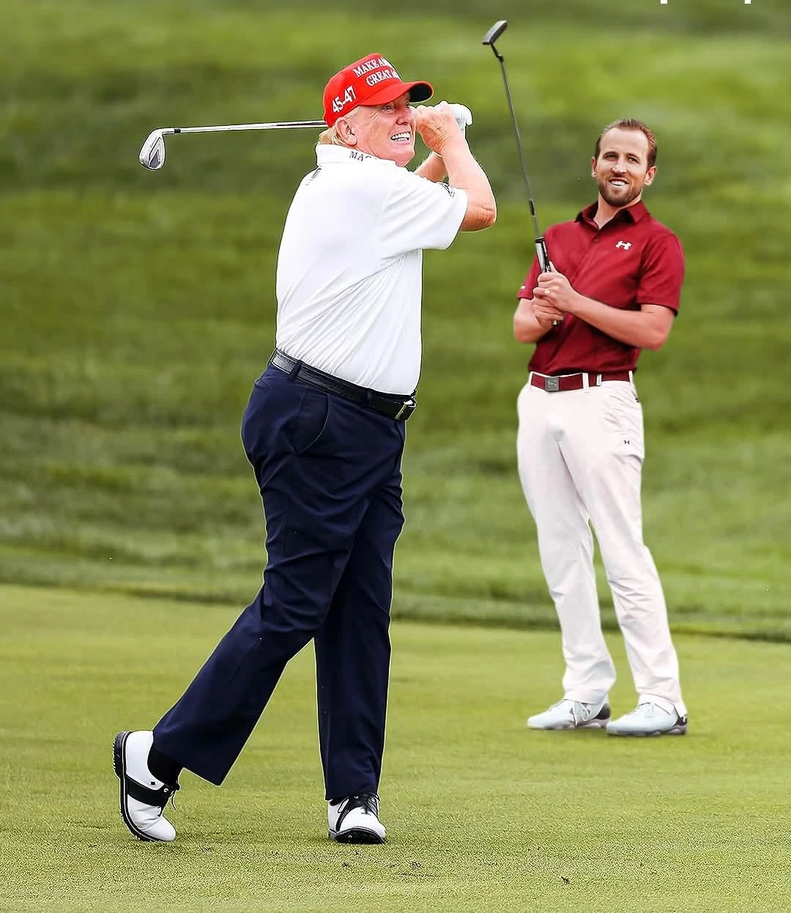

England captain Harry Kane confirmed a surreal round of golf with Donald Trump in Palm Beach, Florida, during World Cup quarter-final week. The crossover meeting, teed up by Trump himself, highlights the unique dynamic between the two figures. Kane praised Trump's impressive golf game at nearly 80 years old, capturing global sports and cultural attention ahead of a crucial football match.

A Surreal Crossover in Palm Beach
Of all the things you expect an England football captain to drop the week of a World Cup quarter-final, "I've played golf with the President" is certainly not on the list. Yet, that is exactly where we find ourselves. Harry Kane, sitting in front of the media cameras ahead of England's high-stakes clash against Norway, confirmed the surreal round. A few days earlier, Donald Trump had teed up the narrative himself, telling reporters that he'd played a round with the English striker and thoroughly liked him, calling him a great player and an excellent golfer.
So when a journalist asked Kane about it, instead of batting the question away with the usual corporate media talk, the 32-year-old striker ran with the story. His word of choice to describe the meeting was simple: "surreal." It is a fitting term. For someone who grew up in Chingford, receiving an invite to Palm Beach to read putts next to the former president — and current candidate — is the definition of a surreal crossover.
"You grow up in Chingford, you get an invite to Palm Beach, and next thing you know you're reading putts next to one of the most visible figures alive. Surreal about covers it."
Analysing Trump's Golf Game: Longevity and Technique
The fascinating aspect of Kane's commentary was how little he wanted to discuss his own game. "I played all right," he said, before quickly moving on. Anyone who has played competitive sports understands the modesty of a professional athlete. If a player says they played "all right," it usually means their swing was tidy, their drives found the short grass, and they avoided embarrassing mistakes under watch. However, Kane wanted to discuss Trump's swing and course capability.
"His golf is pretty good, to be honest with you. I hope I can play golf as good as him when I'm his age," Kane remarked. Trump is nearly 80 years old. Kane, at 32, sounded genuinely taken by the older man's ability to maintain a repeatable, clean strike. There is something compelling about a world-class footballer looking at a senior player and hoping to carry that level of physical capability fifty years down the line.
Footballers and Golf: The Ultimate Sport Crossover
It is no secret that professional footballers make excellent golfers. The carryover of timing, hand-eye coordination, hip rotation, and overall athletic competitiveness means half the England squad can navigate 18 holes in the low 80s without much practice. A forward with Kane's touch, distance control, and penalty-spot cool was never going to be the player shanking it into the Florida lagoons.
But golf also provides footballers with a rare mental release. The focus required to read a breaking putt is entirely different from the split-second reaction times needed on the pitch. For Kane, a quiet walk in Palm Beach with Secret Service agents trailing in the group behind represents both an intense crossover moment and a brief escape from the tournament pressure cooker.
Cultural Impact: Crossover Appeal During World Cup Week
The reason this story is capturing global attention is the timing. It didn't happen during a quiet Tuesday in July; it dropped just days before Kane leads England into a crucial World Cup knockout match. In a summer where Trump and golf are constantly in the headlines, a crossover story involving the England captain was always going to fly.
And frankly, it's a welcome break. In a tournament landscape often buried in complex statistical metrics, press triggers, and endless updates on Kane's ankle status, this story offers a classic human narrative. It is about a footballer who flew to Florida, played 18 holes with someone he never expected to meet, and walked away impressed by an old fella's golf game.
The Raw Read
Strip away the political environment and the palm trees, and this is a classic golf story. You get paired with a stranger, share a few laughs on the course, and walk off the 18th green half-hoping you are hitting the ball that clean when you reach their age. The experience is the same for Harry Kane as it is for the rest of us; he just happened to do his version in Palm Beach under the watchful eyes of the Secret Service.
Frequently Asked Questions
Did Harry Kane play golf with Donald Trump?
Yes. Harry Kane confirmed during a World Cup press conference that he played a round of golf with Donald Trump in Palm Beach, Florida, describing the experience as "surreal."
What did Harry Kane say about Donald Trump's golf game?
Harry Kane praised Trump's golf game, stating, "His golf is pretty good, to be honest with you. I hope I can play golf as good as him when I'm his age."
Where did Harry Kane and Donald Trump play golf?
The round of golf took place at a course in Palm Beach, Florida, ahead of England's World Cup quarter-final match.
Why did Harry Kane play golf with Donald Trump?
Donald Trump extended an invite to the England captain during a week of preparations in Florida, which was followed by Trump mentioning the round to reporters.
Is Harry Kane a good golfer?
Yes, Harry Kane is known to be an excellent golfer, playing off a low single-figure handicap, a common trait among elite professional footballers.